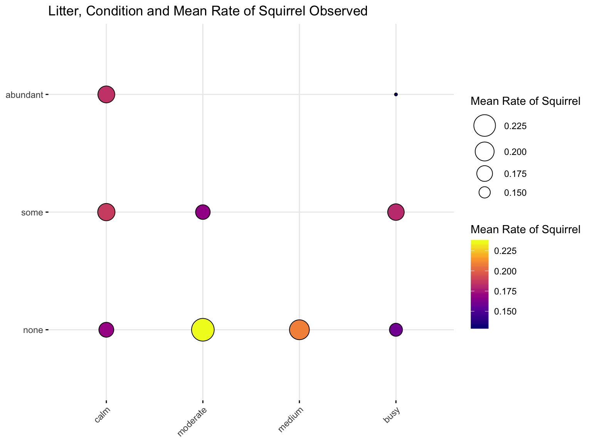

Squirrels have always served as a needed source of entertainment in Central Park. Other rodents’ population has been
well traced and documented by humans, but not always Squirrels. However, the necessity of mapping the total population
of squirrels in Central Park is observed as it depicts this community’s size and growth, which is highly related to the
evaluation of this community’s functioning as a source of entertainment, as well as their potential of harboring and
delivering pathogens to humans.
In this project, we use The Squirrel Census data from NYC Open Data host, which focuses on Eastern gray species
specifically. For this project, we aim at depicting a full picture of the current squirrels community in Central Park,
with regards to their demographics statistics as well as their living status. We also intend to assess their performance
and activity of Squirrels in Central Park, by evaluating their interactions with humans.
We believe this project can provide evidence-based information for the Central Park Squirrel community, as well as
contribute to better evaluation and regulation of the Squirrel population in Central Park. This project also has the
potential in providing further management insights for the planning and designing aspect of the Central Park.
In this project, we aimed to examine factors associated with the distribution of the squirrel population in Central Park
as well as factors that may be important in predicting certain squirrel behaviours and squirrel-human/predator
interactions. Our last aim was to predict and visualize different behaviour pattern of the squirrels. We therefore
proposed the following research questions:
How does squirrel fur color change throughout different hectares in Central park?
What factors affect squirrel distribution in Central Park? If any association exists, how can we visualize it?
How can we predict and visualize squirrel’s behaviour and/or their interaction with humans/predators based on ambient environment and temperature?
This table contains squirrel data for each of the 3,023 sightings, including location coordinates, age, primary and
secondary fur color, elevation, activities, communications, and interactions between squirrels and with humans.
This table contains environmental data related to each of the 350 “countable” hectares of Central Park. Examples include
weather, litter, animals sighted, and human density.
We downloaded the data from the web and called it hectare.
We created following new variables:
temperature_fehrenheit : temperatures for different time during a day.
rate: the number of squirrels in each hectare observed by sighters per minute.
temperature_category : there are five categories for temperatures, “below 50”, “50-60”, “60-70”, “above 70”, “others”.
noninteraction: total squirrels’activity count for running, chasing, climbing, eating and foraging.
interaction : total activity count for interaction between squirrels and predators or human, including
kukking, quaaing, tail flags, tail twitching, being indifferent and running away.
The boxplot described the relationship between temperature and rate of squirrel observed
During the study period (10/7/2018-10/19/2018), the temperatures’ range is between 50 and 70 degrees Fahrenheit.Below 50
degrees Fahrenheit, the number of squirrels observed drastically declined. Above 50, the change on rate of squirrel
observed is not significant.
The bubble plot describes how conditions affect the rate of squirrel with different levels of litter amount
The amount of litter and noise levels in the environment did not affect squirrel distribution much; however, when there
was an abundant amount of litters and high level of noise in the environment, the number of squirrels at the lowest.
This partially aligns with our expectations that squirrels stay away from the crowds and occupied areas but why other
levels of litter and noise did not affect the number of squirrels as much worths further investigation.
This graph indicates the total activity frequency for juvenile and adult squirrels during study period. The activity
includes non-interative and interative with predators or human.

Generally, the activity frequency is significantly higher among adult squirrels than juvenile.
This graphs show the frequency of squirrel’s non-interative and interative activities with predactors or human in the park.
Overall, non-interative activity counts were higher than interactive activity counts for the whole study period. There
was an obvious decreasing trend on both activity counts during the last few days.
It is also interesting to see how various factors including temperature, park condition, influence both squirrel’s own
behaviours as well as their interactions with the external environment (including humans and potential predators).
A few limitations of this dataset worth mentioning here. The overall sample size was small making stratified analysis
difficult. We therefore did not perform analysis on specific squirrel activity and could not comment on how the predictors of interest (temperature, condition, ) here will independently affect each activity of interest. In addition, all data
was only collected for 11 days over a period of two consecutive weeks and the temperatures did not vary as much making our conclusion on the association between temperature and squirrel distribution less convincing. A followup problem from this
is that we were not able to make any inference about change in squirrel’s behaviours based on several predictors tested as our samples were limited and were best represent the squirrel population in Central Park. To our knowledge, there was only one other squirrel census conducted previously in Atlanta, our analysis based on data collected in 2018 provides the most
up-to-date information on squirrel behaviors and their interactions with the environment, humans, and other predators. We
therefore believe that our attempt to discover factors associated with squirrel distribution or squirrel behaviours still gave some interesting findings. However, to draw a more definitive conclusion, further investigation on significant predictors of squirrel behaviour patterns should be conducted on wider squirrel populations that span wider geographic areas with longer observation period.